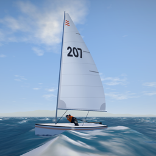
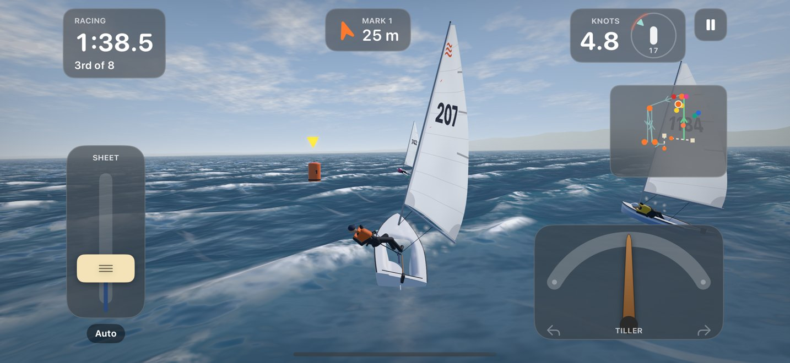

Tiller & SheetSteer it. Trim it. Win it.
A 3D dinghy race for iPhone and iPad, sailed with your own hands on the tiller and the mainsheet.

One thumb steers, the other trims. Pull the sheet in and the sail fills; let it run and it flogs. Underneath is a full sailing simulation: puffs and shifts that march down the course, waves you can surf, a sailor who hikes against the heel, and a boom that slams across in a careless gybe hard enough to put you in the water.
On the water
- Fleet races against seven computer sailors, on a different course every race.
- Match races, one against one.
- Five challenges: timed start, gybe slalom, rounding sprint, surf run and heavy air.
- Online races for two to eight sailors through Game Center, with a rating and monthly season points.
- Learn to sail in two minutes with a guided first sail.
Free. No ads, no purchases, no account.